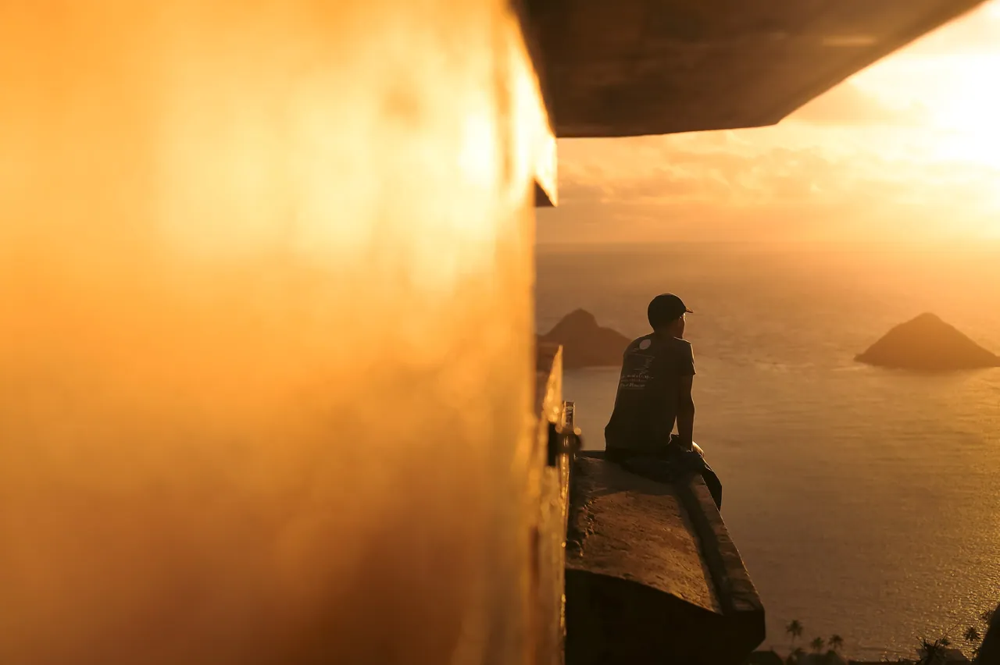
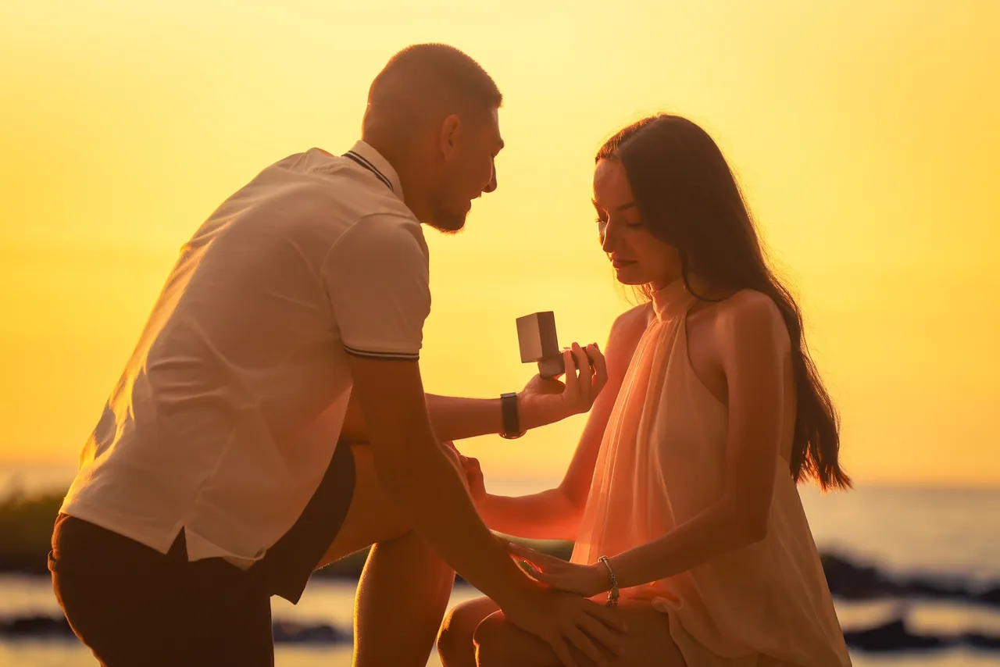
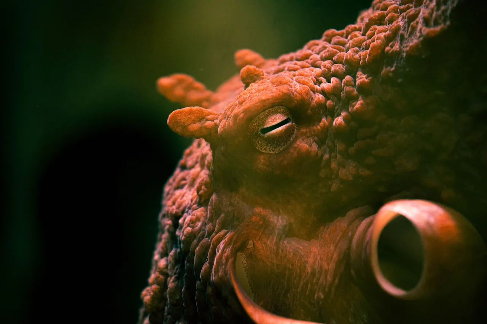
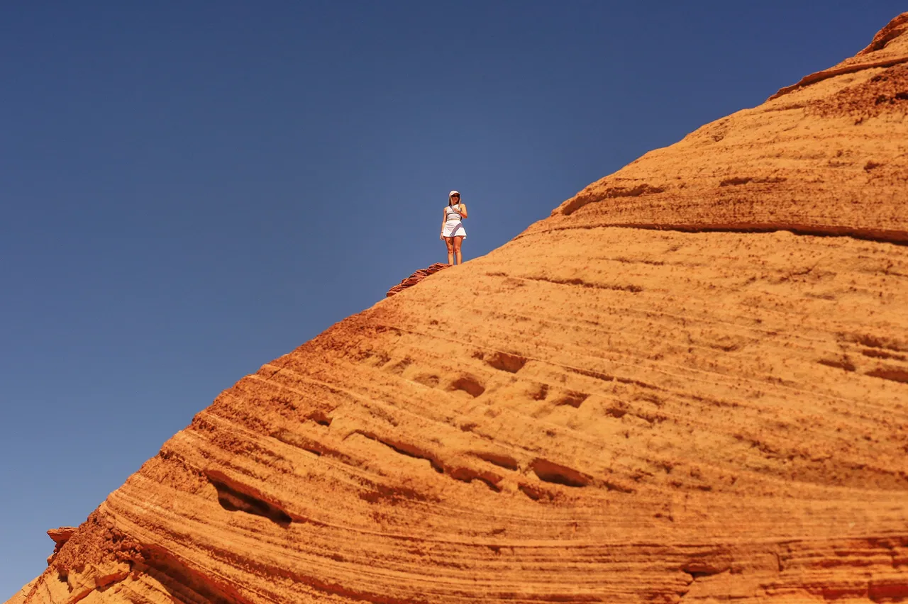
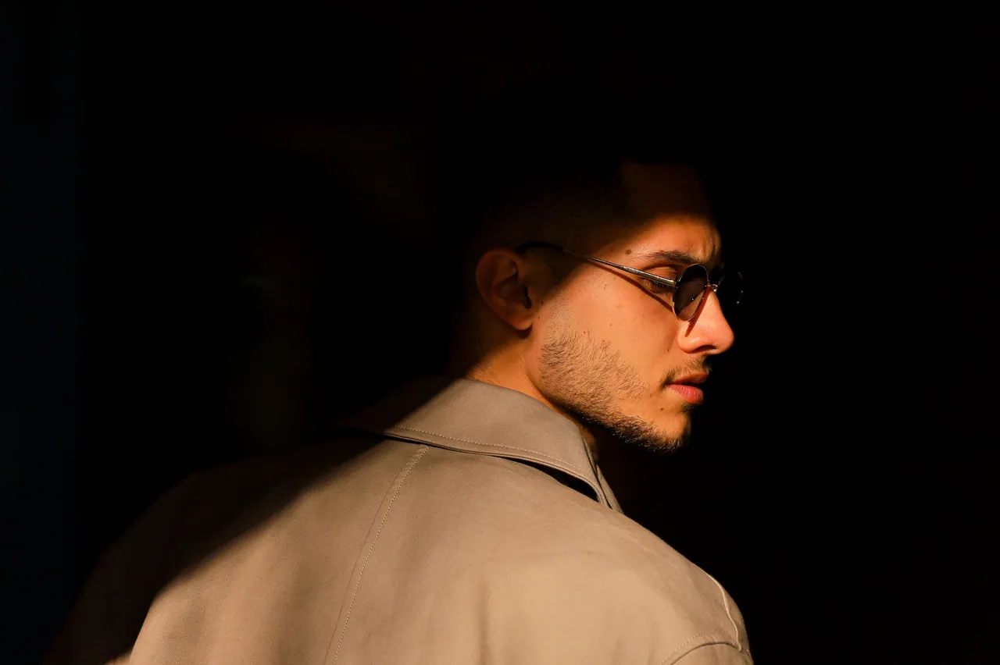
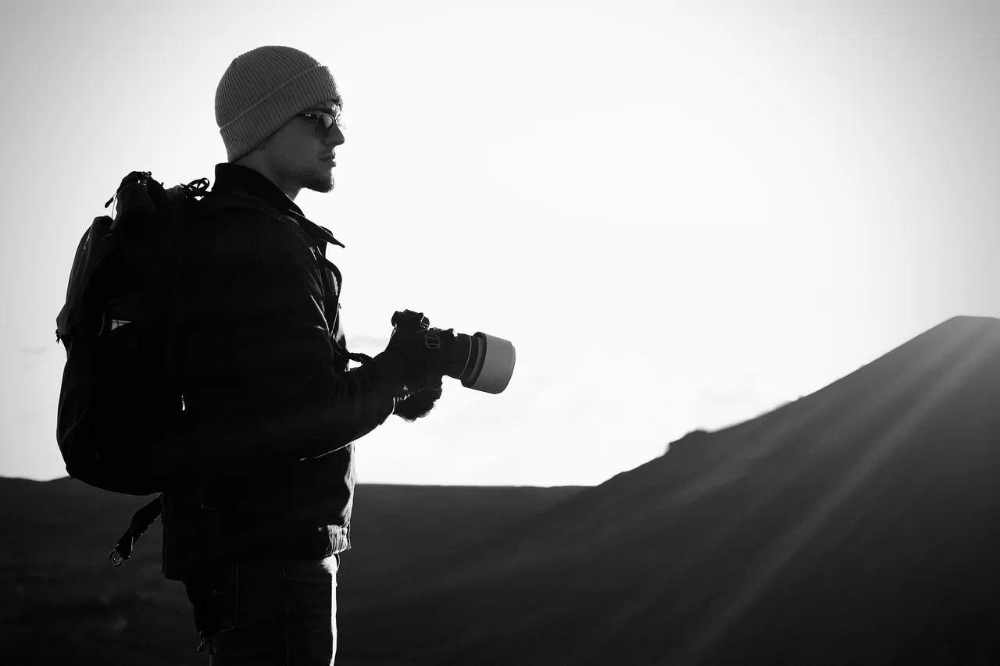
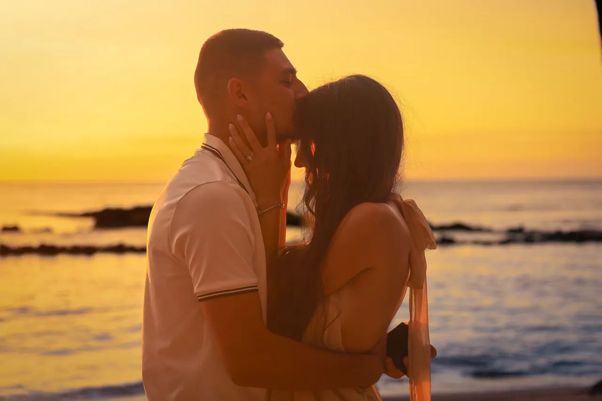
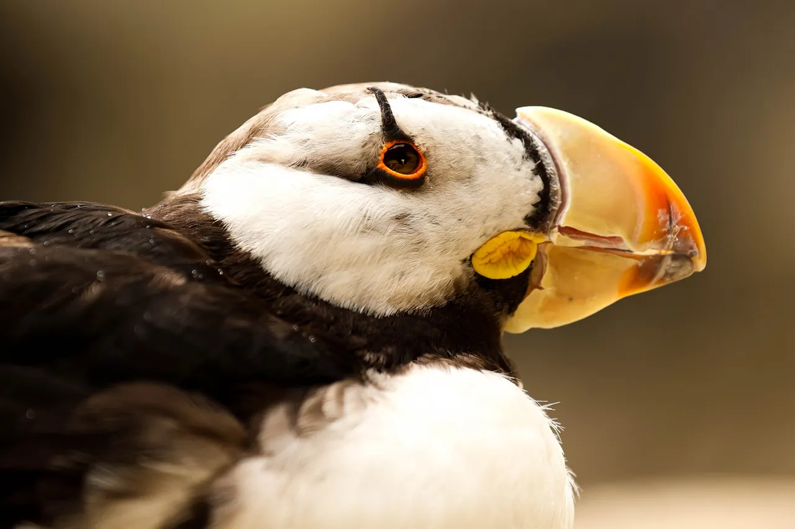
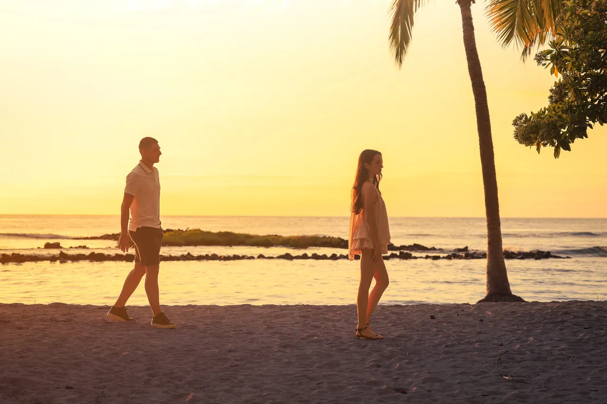

Atanas, photographer. Light, when it finally arrives.
I photograph people at the moments they will want back, and animals and places when nobody is asking me to.
See the workSelected stories
Each one told in sequence, the way it happened. Browse every photograph

A sunset proposal on the beach, from the first step onto the sand to the last light.
Open the story
Animals photographed close, in low light, with a long lens and a lot of patience.
Open the story
Wide country, usually with someone very small somewhere in it.
Open the story
Portraits built out of shadow and one source of light.
Open the storyHello, I am Atanas.
I mostly shoot with medium to long lenses and little light. Most of my favourite frames come from waiting: for the sun to drop, for an animal to turn its head, for two people to forget I am there.
More about me
What I photograph
Pick one to see only that kind of work.
-
Proposals and couples
Planned with you in advance, shot from a distance so the moment stays yours.

-
Portraits
Low-key, directional light. Personal, editorial and profile portraits.
-
Wildlife
Animals at eye level, patiently.

-
Landscape and travel
Wide places, usually with someone small in them.

The light lasted forty minutes. The question took one.
See the proposal